Under review at ICML 2026
Author list will be released upon deanonymization.
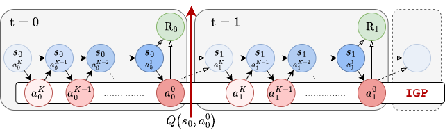
Generative control policies (GCPs), such as diffusion- and flow-based policies, have emerged as effective parameterizations for robot learning. Yet there remains substantial debate over how to sample-efficiently fine-tune them via reinforcement learning. A prevailing view holds that finetuning all GCP steps is unnecessary, motivating approaches that fine-tune only a subset of the generative process — either steering the initial noise distribution, or learning residual corrections on top of a frozen base policy. In this work, we introduce Off-Policy Generative Policy Optimization (OGPO), a sample-efficient algorithm for full-finetuning of GCPs that maintains off-policy critic networks to maximize data reuse and propagates policy gradients through the full generative process via a modified PPO objective, using critics as the terminal reward. OGPO achieves state-of-the-art performance on manipulation tasks spanning multi-task settings, high-precision insertion, and dexterous control. To our knowledge, it is also the only method that can fine-tune poorly-initialized behavior cloning policies to near full task-success with no expert data in the online replay buffer, and does so with few task-specific hyperparameter tuning.
✂️ Sever the bi-level MDP. Denoising trajectories are computational, environment transitions are expensive. OGPO truncates the bi-level MDP at the denoising boundary and uses $Q_{\text{targ}}(s, a_{t,0})$ as a terminal reward — decoupling sample-efficient critic learning from expressive policy extraction.
♻️ Off-policy critic, on-policy extractor. Fit $Q$ off-policy for data reuse; extract policies with PPO over parallel-sampled denoising trajectories in the GCP's imagination. No backprop-through-time, no $\nabla_a Q$ differentiation.
🚀 Full-finetuning, with no expert data. OGPO+ fine-tunes poorly-initialized BC policies to near-full success without pre-training data in the replay buffer — a capability no prior steering/residual method achieves.
We view a flow- or diffusion-based GCP as an iterative policy $\bar\pi_\theta: \mathcal{S} \times \mathcal{A} \times \mathbb{N} \to \Delta(\mathcal{A})$ that, given state $s_t$, produces a denoising trajectory $a_{t,K:0} = (a_{t,K}, \ldots, a_{t,0})$. Following Ren et al. (2024), this unfolds a bi-level MDP where the outer MDP $\mathcal{M}_{\text{env}}$ handles environment transitions $s_t \to s_{t+1}$, and an inner denoising MDP handles transitions $a_{t,k} \to a_{t,k-1}$.
Crucially, $Q_{\text{targ}}$ acts as a terminal reward at the end of the denoising MDP: since no rewards are dispensed at intermediate denoising steps, $\hat A$ is the Monte-Carlo return along the denoising trajectory. We sample $N_{\text{group}}$ parallel denoising trajectories per state (GRPO-style) and average the baseline via $\hat V^{(i)} \leftarrow \tfrac{1}{N_{\text{group}}}\sum_j Q_{\text{targ}}(s^{(i)}, a_0^{(i,j)})$, avoiding a separate value network.
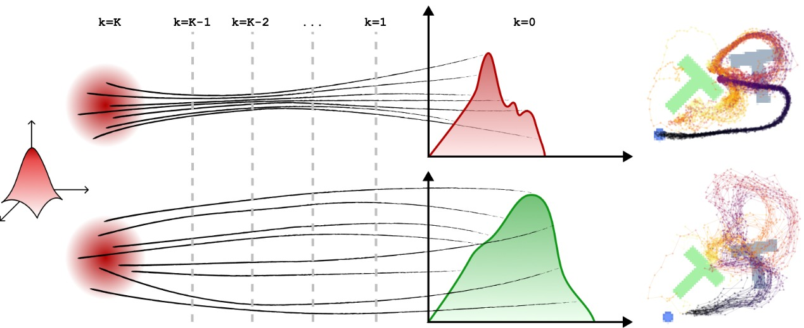
Throughout this work we systematically compare five distinct RL formulations for finetuning GCPs. Each slice trades off sample efficiency, stability, and expressivity.
Key equation: $\hat A = Q_{\text{targ}}(s, a_{t,0}) - \hat V$ with $\omega_\theta = \prod_k \pi_\theta / \pi_{\bar\theta}$ over the denoising chain. Delivers the best of both worlds — TD sample efficiency in $\mathcal M_{\text{env}}$ and expressive, stable zero-order updates on the denoising chain.
Stable updates, no critic. But every gradient step needs fresh environment interactions, and the effective horizon is $K \times T$ rather than $T$. Empirically ~7× slower than OGPO+ on ROBOMIMIC tasks to reach the same success rate.
Cheap and sample-efficient when the base policy already covers optimal actions. Fails when the BC init is weak (e.g. KITCHEN) and on high-precision tasks, where later denoising steps must change.
Strong on dense-reward dexterous control (ADROIT) where small corrections suffice. Generally unstable or stuck when the base policy is weak, because the residual cannot expand action-distribution support.
Sample efficient, but SFT cannot expand support of the action distribution. Plateaus at lower performance on multiple tasks and needs significant per-task hyperparameter tuning.
| Criterion | OGPO | QC | DSRL | EXPO |
|---|---|---|---|---|
| Mixed Data Quality | ✓✓ | ✓✓ | ✓✓ | ✗✗ |
| High-Precision Tasks | ✓✓ | ✓✓ | ✗✗ | ✓✓ |
| Partial Demonstrations | ✓✓ | ✓✓ | ✓✓ | ✗✗ |
| Long Horizon | ✓✓ | ✓✗ | ✓✗ | ✗✗ |
| Dense / Dexterous | ✓✓ | ✓✓ | ✓✗ | ✓✓ |
| High Sample Efficiency | ✓✓ | ✓✗ | ✗✗ | ✓✗ |
Left/right symbol = performance with/without task-specific hyperparameter tuning. ✓✓ converges on all tasks competitive with SOTA; ✗✗ fails on all tasks.
We evaluate OGPO across four environment families spanning multi-task long-horizon control (Franka Kitchen), high-precision insertion (Robomimic), dexterous manipulation (Adroit), and pixel-based language-conditioned control (LIBERO). Policies are pre-trained with BC up to ~50% success, then fine-tuned without access to offline data.
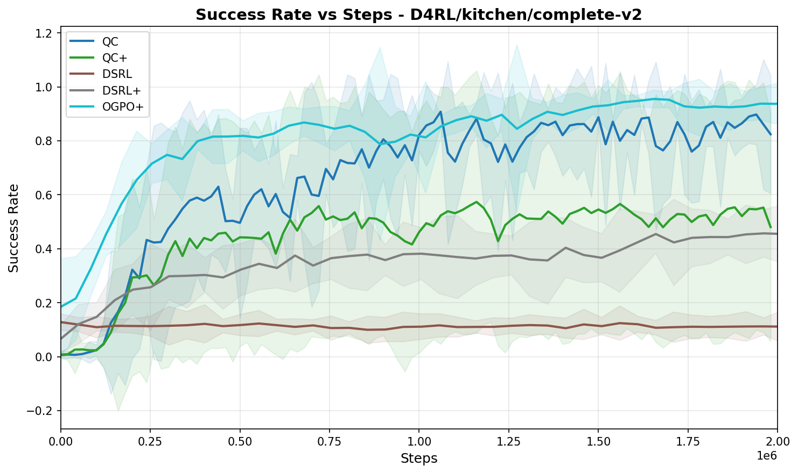
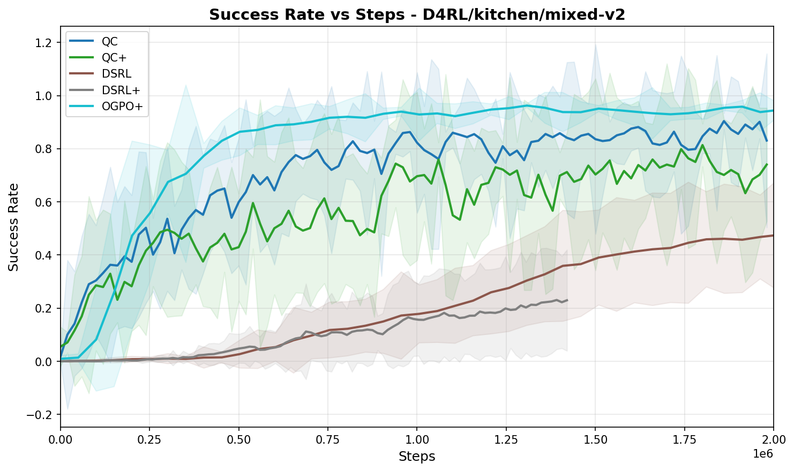
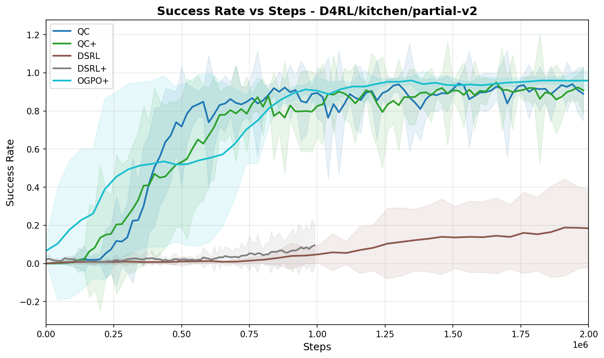
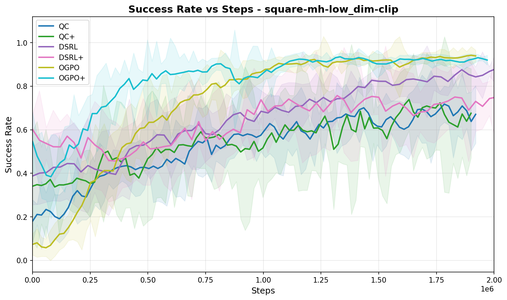
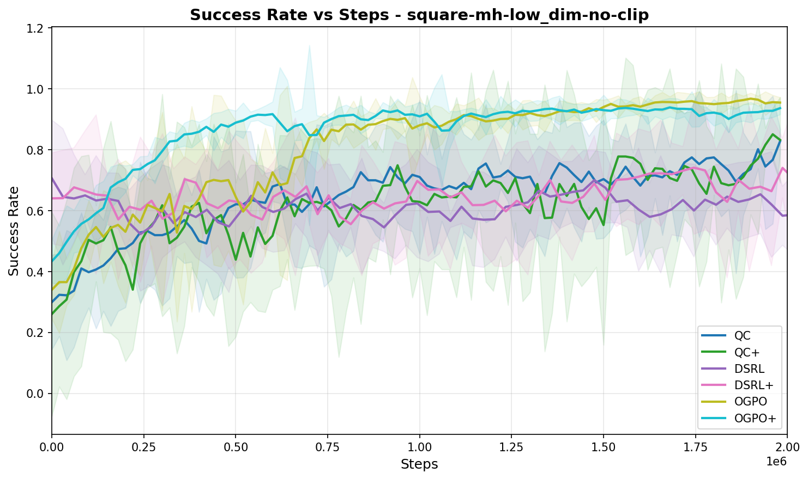
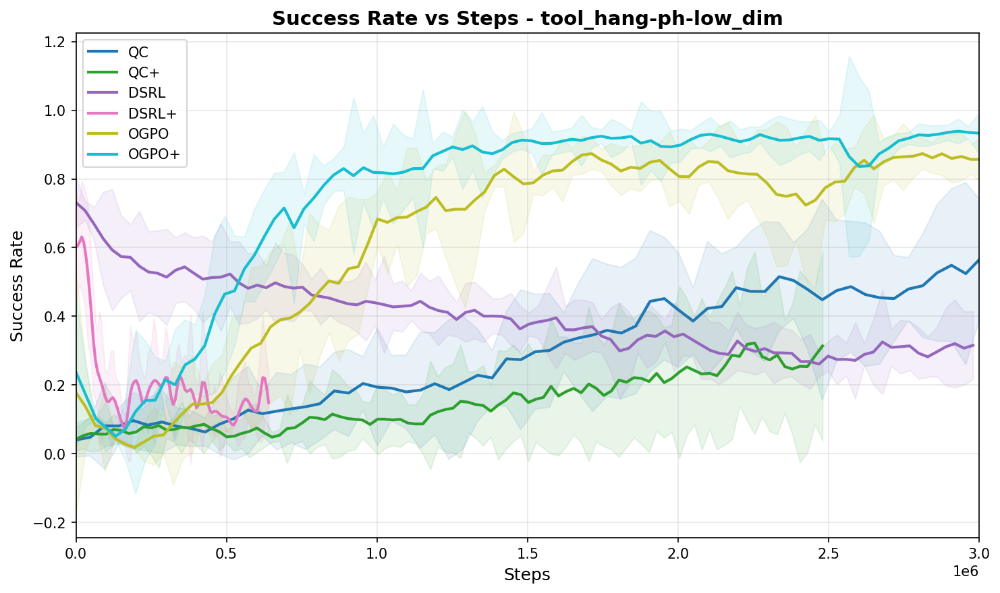
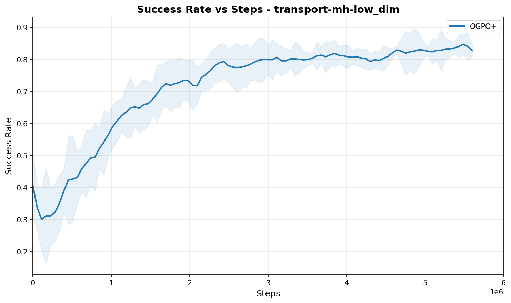
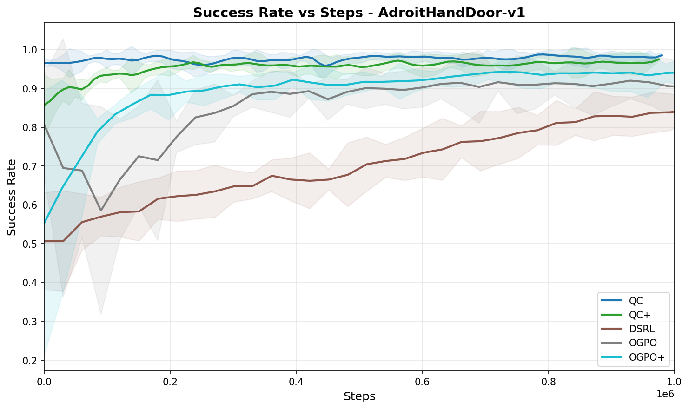
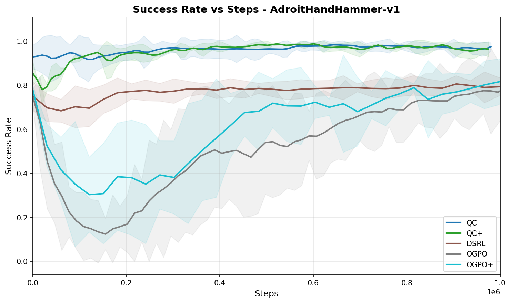
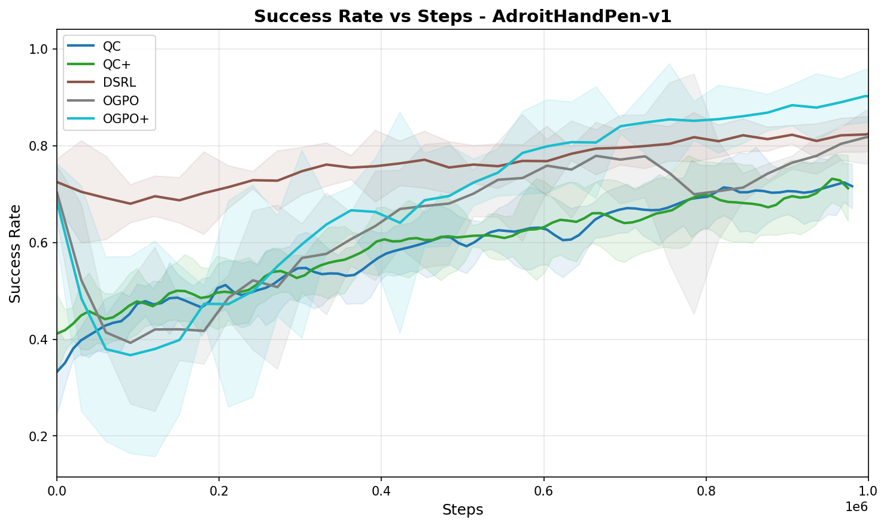
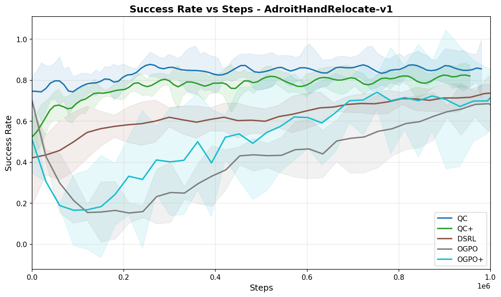
Rollouts on Robomimic tasks from the clipped BC initialization. OGPO+ completes high-precision insertion reliably while competing approaches fail in characteristic ways.
BC policies exhibit mode-seeking behavior: action variance collapses rapidly to a narrow cone of demonstrated trajectories, agnostic to reward. OGPO, in contrast, uses Q-function gradient information indirectly to drive manifold-level expansion toward high-value regions beyond the BC support. UMAP of 64 action samples at critical states on Tool Hang shows that OGPO-trained policies diverge from the BC mode exactly where $\nabla_a Q(s,a)$ points orthogonally to the BC action spread.
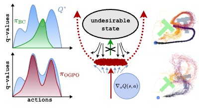
Six findings from systematic ablations (Appendix J):
Full-policy finetuning can be overkill when the replay buffer already contains abundant expert-quality data — in that regime, lighter-weight approaches like residual learning can match OGPO at lower compute. PPO can over-exploit $Q$, inducing small oscillations that prevent exact 100% success on some tasks; the success-buffer BC term in OGPO+ is specifically designed to damp this. Completion speed vs. success rate tension: sparse $-1$-per-step rewards pull toward faster but less reliable policies; when exacerbated by aggressive Best-of-N, success rates can drop.
@misc{ogpo2026,
title = {Sample-Efficient Full-Finetuning of Generative Control Policies},
author = {Anonymous Authors},
year = {2026},
note = {Under review at ICML 2026}
}